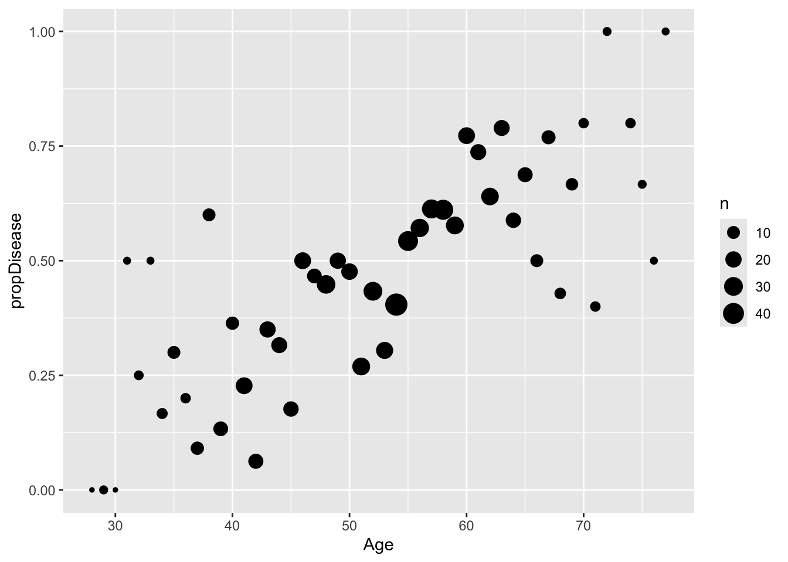

library(tidyverse)
library(caret)
library(randomForest)
library(gbm)ST558_HW5
Task 1 - Conceptual Questions
Question 1: What is the purpose of cross-validation when fitting a random forest model?
Selecting a random forest model will result in random predictors used in each bootstrap sample. Cross-validaation is used to determine the best number of predictors to use for the random forest input.
Question 2: Describe the Bagged Tree Algorithm
When given a sample set, using the bagged tree algorithm creates subset samples from the original sample called “bootstrap” samples. A model fit is then generated for each bootstrap sample as opposed to the overall sample, and the prediction selected is the average of all bootstrap model predictions generated for the set.
Question 3: What is meant by a General Linear Model?
Simply put, a General Linear Model is a linear regression model, which is used for samples with normal distributions and can use simple linear regression, or multiple linear regression.
Question 4: When fitting a multiple linear regression model, what does adding an interaction term do? That is, what does it allow the model to do differently as compared to when it is not included in the model?
An interaction term accounts for the effect of a predictor on the response in the presence of another particular predictor. For example, cholesterol may be seen to have a certain linear relationship to Heart Disease status, but that linear relationship may have a higher or lower slope based on if the predictors are Male or Female. In that sense, an interaction between Sex & Cholesterol would represent this relationship.
Question 5: Why do we split our data into a training and test set?
If using the same data for both test & training, there is a risk of overtraining the underlying data, or fitting the model too perfectly to the explicit data set used to train. A separate test set is helpful in reducing a metric for error when predicting based on any dataset, not just the given set.
Task 2 - Fitting Models
EDA / Preparation
Load the requisite packages. In order to explore and clean the target data set, I will load tidyverse.
####Sub-Task 1: Understanding the Data:
I will start by reading in the ‘heart’ data from a .csv file downloaded and added to the R repository - “heart.csv”. This file uses comma-delimited values, so the read_csv() function from ‘readr’ package can be used. The spec() function is used to reveal all columns in the dataset and show their data types.
heart <- read_csv("heart.csv", col_names = TRUE)Rows: 918 Columns: 12
── Column specification ────────────────────────────────────────────────────────
Delimiter: ","
chr (5): Sex, ChestPainType, RestingECG, ExerciseAngina, ST_Slope
dbl (7): Age, RestingBP, Cholesterol, FastingBS, MaxHR, Oldpeak, HeartDisease
ℹ Use `spec()` to retrieve the full column specification for this data.
ℹ Specify the column types or set `show_col_types = FALSE` to quiet this message.spec(heart)cols(
Age = col_double(),
Sex = col_character(),
ChestPainType = col_character(),
RestingBP = col_double(),
Cholesterol = col_double(),
FastingBS = col_double(),
RestingECG = col_character(),
MaxHR = col_double(),
ExerciseAngina = col_character(),
Oldpeak = col_double(),
ST_Slope = col_character(),
HeartDisease = col_double()
)Now that the data has been read into an object, I will create a usable tibble.
heart <- as_tibble(heart)
head(heart)# A tibble: 6 × 12
Age Sex ChestPainType RestingBP Cholesterol FastingBS RestingECG MaxHR
<dbl> <chr> <chr> <dbl> <dbl> <dbl> <chr> <dbl>
1 40 M ATA 140 289 0 Normal 172
2 49 F NAP 160 180 0 Normal 156
3 37 M ATA 130 283 0 ST 98
4 48 F ASY 138 214 0 Normal 108
5 54 M NAP 150 195 0 Normal 122
6 39 M NAP 120 339 0 Normal 170
# ℹ 4 more variables: ExerciseAngina <chr>, Oldpeak <dbl>, ST_Slope <chr>,
# HeartDisease <dbl>I would like to find the data columns which include NA values. I can use the is.na() function to determine this. I looped through a base vector called “NA_vec” which was simply constructed with column names matching those of the ‘heart’ tibble and vector values associated with each column number. Thus there will be the same number of entries in the vector as there are columns in the heart data set. The loop overwrites those base values with the results of a sum of each time is.na is TRUE within that column. The resulting NA_vec shows no NA values.
NA_vec <- c(seq_along(heart))
names(NA_vec) <- names(heart)
for (i in seq_along(heart)) {
NA_vec[i] <- sum(is.na(heart[i]))
}
NA_vec Age Sex ChestPainType RestingBP Cholesterol
0 0 0 0 0
FastingBS RestingECG MaxHR ExerciseAngina Oldpeak
0 0 0 0 0
ST_Slope HeartDisease
0 0 While there are no NA values in the data set. Looking at the heart data set does show several values of 0 for cholesterol. Given that it is reasonable to assume no individual would have a cholesterol measurement of 0, these values can be considered missing, or functionally NA. I will replace these “0” values with NA to avoid confusion in the future.
The resulting count of how many Cholesterol measurements are then N/A’ed is calculated specifically for that column.
heart$Cholesterol[heart$Cholesterol==0] <- NA
sum(is.na(heart$Cholesterol))[1] 172There are 918 total observations for this data set and 172 of them are missing Cholesterol measurements. I have removed these NA’ed observations from the data set for future ease.
Additionally, the summary() function is used to offer an overview of each variable/column’s attributes.
heart_2 <- heart |>
drop_na()
summary(heart_2) Age Sex ChestPainType RestingBP
Min. :28.00 Length:746 Length:746 Min. : 92
1st Qu.:46.00 Class :character Class :character 1st Qu.:120
Median :54.00 Mode :character Mode :character Median :130
Mean :52.88 Mean :133
3rd Qu.:59.00 3rd Qu.:140
Max. :77.00 Max. :200
Cholesterol FastingBS RestingECG MaxHR
Min. : 85.0 Min. :0.0000 Length:746 Min. : 69.0
1st Qu.:207.2 1st Qu.:0.0000 Class :character 1st Qu.:122.0
Median :237.0 Median :0.0000 Mode :character Median :140.0
Mean :244.6 Mean :0.1676 Mean :140.2
3rd Qu.:275.0 3rd Qu.:0.0000 3rd Qu.:160.0
Max. :603.0 Max. :1.0000 Max. :202.0
ExerciseAngina Oldpeak ST_Slope HeartDisease
Length:746 Min. :-0.1000 Length:746 Min. :0.0000
Class :character 1st Qu.: 0.0000 Class :character 1st Qu.:0.0000
Mode :character Median : 0.5000 Mode :character Median :0.0000
Mean : 0.9016 Mean :0.4772
3rd Qu.: 1.5000 3rd Qu.:1.0000
Max. : 6.2000 Max. :1.0000 ####Sub-Task 2: Update Data > Given that my ‘HeartDisease’ variable has values of 0 & 1 & is a double() data type, I will update it to be a categorical variable ‘Heart_Disease’ with values of YES or NO, then remove the original ‘HeartDisease’ & ‘STSlope’ variables.
heart_3 <- heart_2 |>
mutate(
Heart_Disease = ifelse(HeartDisease == 0, "NO",
ifelse(HeartDisease == 1, "YES", NA))) |>
select(!HeartDisease & !ST_Slope)
heart_3$Heart_Disease <- as.factor(heart_3$Heart_Disease)
head(heart_3)# A tibble: 6 × 11
Age Sex ChestPainType RestingBP Cholesterol FastingBS RestingECG MaxHR
<dbl> <chr> <chr> <dbl> <dbl> <dbl> <chr> <dbl>
1 40 M ATA 140 289 0 Normal 172
2 49 F NAP 160 180 0 Normal 156
3 37 M ATA 130 283 0 ST 98
4 48 F ASY 138 214 0 Normal 108
5 54 M NAP 150 195 0 Normal 122
6 39 M NAP 120 339 0 Normal 170
# ℹ 3 more variables: ExerciseAngina <chr>, Oldpeak <dbl>, Heart_Disease <fct>Sub-Task 3: Create numeric variables
For future tasks (using KNN to predict), numeric values are necessary for each predictor. To address my current data set’s character variables, I will use the caret package’s dummyVars() & predict() functions to create representative numeric variables for several character columns, i.e. Sex, ExerciseAngina, ChestPainType, and RestingECG.
dummies <- dummyVars(Heart_Disease ~ Sex + ExerciseAngina + ChestPainType + RestingECG, data = heart_3)
dum_df <- predict(dummies, newdata = heart_3)Warning in model.frame.default(Terms, newdata, na.action = na.action, xlev =
object$lvls): variable 'Heart_Disease' is not a factorhead(dum_df) SexF SexM ExerciseAnginaN ExerciseAnginaY ChestPainTypeASY ChestPainTypeATA
1 0 1 1 0 0 1
2 1 0 1 0 0 0
3 0 1 1 0 0 1
4 1 0 0 1 1 0
5 0 1 1 0 0 0
6 0 1 1 0 0 0
ChestPainTypeNAP ChestPainTypeTA RestingECGLVH RestingECGNormal RestingECGST
1 0 0 0 1 0
2 1 0 0 1 0
3 0 0 0 0 1
4 0 0 0 1 0
5 1 0 0 1 0
6 1 0 0 1 0I’m not sure why the Warning that Heart_Disease is not a factor exists in the preceding output, because it was explicitly made so in preceding actions. A quick test was used to verify:
is.factor(heart_3$Heart_Disease)[1] TRUEAt this point, I will continue with next steps and determine if there are any other warnings/errors which occur based on this variable’s factor status.
Now to combine the resulting dum_df data set which includes the dummy columns to the original heart_3 data set into a heart_4 data set.
heart_4 <- data.frame(heart_3, dum_df)
head(heart_4) Age Sex ChestPainType RestingBP Cholesterol FastingBS RestingECG MaxHR
1 40 M ATA 140 289 0 Normal 172
2 49 F NAP 160 180 0 Normal 156
3 37 M ATA 130 283 0 ST 98
4 48 F ASY 138 214 0 Normal 108
5 54 M NAP 150 195 0 Normal 122
6 39 M NAP 120 339 0 Normal 170
ExerciseAngina Oldpeak Heart_Disease SexF SexM ExerciseAnginaN
1 N 0.0 NO 0 1 1
2 N 1.0 YES 1 0 1
3 N 0.0 NO 0 1 1
4 Y 1.5 YES 1 0 0
5 N 0.0 NO 0 1 1
6 N 0.0 NO 0 1 1
ExerciseAnginaY ChestPainTypeASY ChestPainTypeATA ChestPainTypeNAP
1 0 0 1 0
2 0 0 0 1
3 0 0 1 0
4 1 1 0 0
5 0 0 0 1
6 0 0 0 1
ChestPainTypeTA RestingECGLVH RestingECGNormal RestingECGST
1 0 0 1 0
2 0 0 1 0
3 0 0 0 1
4 0 0 1 0
5 0 0 1 0
6 0 0 1 0Split the Data
Prior to fitting a model, we need to split the data into train and test data sets. We can do this with the createDataParticion() function from the caret package. This includes at first setting the seed so that the random number generator used for random number generation/splitting from data sets can be reproducible.
#Set the seed so random number generation can be replicated.
set.seed(90)
trainIndex <- createDataPartition(heart_4$Heart_Disease, p = 0.7, list = FALSE)
heartTrain <- heart_4[trainIndex, ]
heartTest <- heart_4[-trainIndex, ]Fitting using kNN
The first model used to fit the data will be the kNN model. Using the caret package, I first set a trainControl method. In this case, it is using repeated cross-validation. This means that a cross-validation step is carried out, in our case with 10 subsets, but the CV is also repeated. In our case, we will repeat 3 times and essentially end with an average of the results of the 3 repetitions.
This training control method is set as an object and entered as an argument for the ultimate goal in the train() function. This train() function is from the caret package and will be used to train the data set to determine an optimal k value.
trctrl <- trainControl(method = "repeatedcv", number = 10, repeats = 3)
set.seed(3333)
knn_fit <- train(Heart_Disease ~., data = heartTrain, method = "knn",
trControl=trctrl,
preProcess = c("center", "scale"),
tuneGrid = data.frame(k = c(1:40)),
tuneLength = 10)Given the computational requirements of the above training, I’ll setup a separate code chunk to show the knn_fit result:
knn_fitk-Nearest Neighbors
523 samples
21 predictor
2 classes: 'NO', 'YES'
Pre-processing: centered (17), scaled (17)
Resampling: Cross-Validated (10 fold, repeated 3 times)
Summary of sample sizes: 470, 471, 470, 471, 471, 471, ...
Resampling results across tuning parameters:
k Accuracy Kappa
1 0.7424407 0.4821460
2 0.7539308 0.5056215
3 0.7896226 0.5769802
4 0.7864296 0.5706019
5 0.7972424 0.5923821
6 0.7921746 0.5824353
7 0.7921505 0.5824437
8 0.7927431 0.5837131
9 0.7934446 0.5847194
10 0.8024311 0.6027240
11 0.8037010 0.6053197
12 0.8043299 0.6065235
13 0.8037252 0.6055844
14 0.8005201 0.5991073
15 0.8017779 0.6017509
16 0.7998791 0.5980063
17 0.8082003 0.6146862
18 0.7999153 0.5981801
19 0.8011490 0.6005713
20 0.8024190 0.6032962
21 0.7998911 0.5982057
22 0.7985728 0.5954368
23 0.8024190 0.6034734
24 0.7992259 0.5971602
25 0.8062409 0.6112760
26 0.8031084 0.6048683
27 0.8056362 0.6100904
28 0.8069424 0.6125765
29 0.8005685 0.6000558
30 0.8063256 0.6116522
31 0.8025036 0.6040191
32 0.7999395 0.5988407
33 0.8005926 0.6005130
34 0.8005685 0.6003643
35 0.8043662 0.6079941
36 0.8094582 0.6182223
37 0.8069182 0.6132477
38 0.8075714 0.6146415
39 0.8062651 0.6119919
40 0.8082003 0.6160253
Accuracy was used to select the optimal model using the largest value.
The final value used for the model was k = 36.The above result can now be tested using prediction and assessed for accuracy using the confusionMatrix() function. The first step is to actually generate a predicted observation dataframe based on our model fit.
test_pred <- predict(knn_fit, newdata = heartTest)
test_pred [1] YES NO NO NO NO NO NO NO YES NO YES YES YES YES YES NO NO YES
[19] NO NO NO YES YES NO YES YES NO NO NO YES NO NO YES NO NO NO
[37] NO NO YES YES NO YES YES NO NO NO YES NO YES NO YES YES NO YES
[55] YES NO YES NO NO NO NO NO YES NO NO YES NO NO NO YES NO NO
[73] NO NO NO YES YES YES NO NO NO YES YES NO NO YES NO YES NO NO
[91] NO YES YES YES NO NO YES YES YES YES YES YES NO YES YES YES YES YES
[109] YES NO YES YES YES YES YES YES YES YES YES NO NO YES NO YES YES YES
[127] YES YES NO NO NO YES NO YES NO YES YES NO NO YES YES YES NO NO
[145] NO NO NO YES NO NO NO NO NO NO YES NO YES NO NO NO YES YES
[163] NO YES NO YES NO NO NO YES YES YES NO NO YES YES YES NO YES NO
[181] YES YES YES NO YES YES NO YES NO YES YES YES YES YES NO YES YES YES
[199] NO NO NO NO YES NO YES NO YES NO YES NO NO NO NO YES NO NO
[217] YES NO NO NO YES YES NO
Levels: NO YESI’m not able to innately assess accuracy from that output, so here’s the confusionMatrix function to help assess:
confusionMatrix(test_pred, heartTest$Heart_Disease)Confusion Matrix and Statistics
Reference
Prediction NO YES
NO 95 20
YES 22 86
Accuracy : 0.8117
95% CI : (0.7541, 0.8608)
No Information Rate : 0.5247
P-Value [Acc > NIR] : <2e-16
Kappa : 0.6227
Mcnemar's Test P-Value : 0.8774
Sensitivity : 0.8120
Specificity : 0.8113
Pos Pred Value : 0.8261
Neg Pred Value : 0.7963
Prevalence : 0.5247
Detection Rate : 0.4260
Detection Prevalence : 0.5157
Balanced Accuracy : 0.8116
'Positive' Class : NO
Logistic Regression
Eventually, I would like to be able to compare several different prediction models for supervised learning. Given that the data set in question is attempting to predict a factor outcome of whether an individual has heart disease or not. The next step in this process is to use the previously processed data set and fit several different logistic regression models to it.
For this analysis, variables can be characters (i.e. dummy variables are not necessary), so I will start with the “heart_3” data set, as opposed to the “heart_4” set used for the kNN investigation.
The three models I will use are: / 1) Age 2) Age and Cholesterol, with interaction effects 3) Age, Cholesterol, and Sex, with interaction effects
Before beginning, I’d like to construct a plot with Age vs the proportion of observations having Heart Disease. While Age feels like a reasonable assumption to show a correlation to Heart Disease status, I’d like to visualize it first. This plot requires using ‘heart_2’, which was pre-factorization of Heart Disease variable, because the proportion requires doubles to be calculated.
distSum <- heart_2 |>
group_by(Age) |>
summarize(propDisease = mean(HeartDisease), n = n())
ggplot(distSum, aes(x=Age, y=propDisease, size = n)) +
geom_point(stat = "identity", aes(size = n))
It does seem like there’s somewhat of a linear relationship, but now I’ll start with the actual model development, starting with simply Disease status based on Age. These models will use the heart_3 data set, constructed with Heart Disease as factor variable.
#Create a train & test data set from the heart_3 set
#Set the seed so random number generation can be replicated.
set.seed(90)
train2Index <- createDataPartition(heart_3$Heart_Disease, p = 0.7, list = FALSE)
heartTrain2 <- heart_3[trainIndex, ]
heartTest2 <- heart_3[-trainIndex, ]Model 1:
#glm fit based on Age as the only predictor
(glmFit1 <- train(Heart_Disease ~ Age,
data = heartTrain2,
method = "glm",
trControl=trctrl,
family = "binomial"))Generalized Linear Model
523 samples
1 predictor
2 classes: 'NO', 'YES'
No pre-processing
Resampling: Cross-Validated (10 fold, repeated 3 times)
Summary of sample sizes: 471, 470, 470, 471, 471, 471, ...
Resampling results:
Accuracy Kappa
0.6329584 0.2630993summary
summary(glmFit1)
Call:
NULL
Coefficients:
Estimate Std. Error z value Pr(>|z|)
(Intercept) -3.44964 0.55684 -6.195 5.83e-10 ***
Age 0.06321 0.01030 6.137 8.41e-10 ***
---
Signif. codes: 0 '***' 0.001 '**' 0.01 '*' 0.05 '.' 0.1 ' ' 1
(Dispersion parameter for binomial family taken to be 1)
Null deviance: 724.02 on 522 degrees of freedom
Residual deviance: 682.25 on 521 degrees of freedom
AIC: 686.25
Number of Fisher Scoring iterations: 4Model 2:
#glm fit based on Age & Cholesterol as predictors, as well as their
#interaction effects.
(glmFit2 <- train(Heart_Disease ~ Age*Cholesterol,
data = heartTrain,
method = "glm",
trControl=trctrl,
family = "binomial"))Generalized Linear Model
523 samples
2 predictor
2 classes: 'NO', 'YES'
No pre-processing
Resampling: Cross-Validated (10 fold, repeated 3 times)
Summary of sample sizes: 471, 471, 471, 471, 470, 471, ...
Resampling results:
Accuracy Kappa
0.6279028 0.2562873Summary
summary(glmFit2)
Call:
NULL
Coefficients:
Estimate Std. Error z value Pr(>|z|)
(Intercept) -1.255e+01 2.631e+00 -4.769 1.85e-06 ***
Age 2.162e-01 4.811e-02 4.494 7.00e-06 ***
Cholesterol 3.638e-02 1.015e-02 3.584 0.000339 ***
`Age:Cholesterol` -6.102e-04 1.848e-04 -3.302 0.000961 ***
---
Signif. codes: 0 '***' 0.001 '**' 0.01 '*' 0.05 '.' 0.1 ' ' 1
(Dispersion parameter for binomial family taken to be 1)
Null deviance: 724.02 on 522 degrees of freedom
Residual deviance: 663.25 on 519 degrees of freedom
AIC: 671.25
Number of Fisher Scoring iterations: 4Model 3:
#glm fit based on Age, Cholesterol, and Sex as predictors
(glmFit3 <- train(Heart_Disease ~ Age + Cholesterol + Sex,
data = heartTrain,
method = "glm",
trControl=trctrl,
family = "binomial"))Generalized Linear Model
523 samples
3 predictor
2 classes: 'NO', 'YES'
No pre-processing
Resampling: Cross-Validated (10 fold, repeated 3 times)
Summary of sample sizes: 470, 471, 471, 470, 471, 471, ...
Resampling results:
Accuracy Kappa
0.6895985 0.3799412Summary
summary(glmFit3)
Call:
NULL
Coefficients:
Estimate Std. Error z value Pr(>|z|)
(Intercept) -6.709550 0.826786 -8.115 4.85e-16 ***
Age 0.067940 0.011153 6.092 1.12e-09 ***
Cholesterol 0.006039 0.001698 3.557 0.000375 ***
SexM 1.948813 0.264209 7.376 1.63e-13 ***
---
Signif. codes: 0 '***' 0.001 '**' 0.01 '*' 0.05 '.' 0.1 ' ' 1
(Dispersion parameter for binomial family taken to be 1)
Null deviance: 724.02 on 522 degrees of freedom
Residual deviance: 608.53 on 519 degrees of freedom
AIC: 616.53
Number of Fisher Scoring iterations: 4The models have AIC values: Model 1 AIC = 686.25 Model 2 AIC = 671.25 Model 3 AIC = 616.53
Of the models selected, the 3rd model has the lowest AIC and the best fit
Predicting and Analyzing model results
I’ll use the method used in the “Fitting using kNN” section above to predict responses based on the logistic regression models above. I’ll also use the method of cross-validation used to get an “average” response outcome.
(confusionMatrix(glmFit3, newdata = heartTest2))Cross-Validated (10 fold, repeated 3 times) Confusion Matrix
(entries are percentual average cell counts across resamples)
Reference
Prediction NO YES
NO 34.9 13.7
YES 17.3 34.1
Accuracy (average) : 0.6896Tree Models
Similar to the above sequence, I will experiment with various tree models and determine which one of the three is the best model/fit.
Model 1: Sex & Chest Pain Type Model 2: Resting BP & Resting ECG Model 3: Age, Sex, Resting BP, and interaction effects
Tree Model 1:
(treeFit1 <- train(Heart_Disease ~ Sex*ChestPainType,
data = heartTrain2,
method = "rpart",
trControl=trctrl,
preProcess = c("center", "scale"),
tuneGrid = data.frame(cp = seq(0, 0.1, by = 0.001)),
tuneLength = 10))CART
523 samples
2 predictor
2 classes: 'NO', 'YES'
Pre-processing: centered (7), scaled (7)
Resampling: Cross-Validated (10 fold, repeated 3 times)
Summary of sample sizes: 471, 471, 471, 471, 470, 470, ...
Resampling results across tuning parameters:
cp Accuracy Kappa
0.000 0.7484519 0.4944257
0.001 0.7484519 0.4944257
0.002 0.7484519 0.4944257
0.003 0.7484519 0.4944257
0.004 0.7484519 0.4944257
0.005 0.7516449 0.5010932
0.006 0.7516449 0.5010932
0.007 0.7516449 0.5010932
0.008 0.7516449 0.5010932
0.009 0.7554669 0.5089632
0.010 0.7554669 0.5089632
0.011 0.7554669 0.5089632
0.012 0.7554669 0.5089632
0.013 0.7554669 0.5089632
0.014 0.7611998 0.5208814
0.015 0.7611998 0.5208814
0.016 0.7611998 0.5208814
0.017 0.7611998 0.5208814
0.018 0.7611998 0.5208814
0.019 0.7611998 0.5208814
0.020 0.7611998 0.5208814
0.021 0.7611998 0.5208814
0.022 0.7611998 0.5208814
0.023 0.7611998 0.5208814
0.024 0.7611998 0.5208814
0.025 0.7611998 0.5208814
0.026 0.7611998 0.5208814
0.027 0.7611998 0.5208814
0.028 0.7611998 0.5208814
0.029 0.7611998 0.5208814
0.030 0.7611998 0.5208814
0.031 0.7611998 0.5208814
0.032 0.7611998 0.5208814
0.033 0.7611998 0.5208814
0.034 0.7611998 0.5208814
0.035 0.7611998 0.5208814
0.036 0.7573537 0.5134024
0.037 0.7573537 0.5134024
0.038 0.7573537 0.5134024
0.039 0.7573537 0.5134024
0.040 0.7573537 0.5134024
0.041 0.7573537 0.5134024
0.042 0.7573537 0.5134024
0.043 0.7573537 0.5134024
0.044 0.7573537 0.5134024
0.045 0.7446299 0.4889228
0.046 0.7446299 0.4889228
0.047 0.7446299 0.4889228
0.048 0.7446299 0.4889228
0.049 0.7267537 0.4543038
0.050 0.7267537 0.4543038
0.051 0.7267537 0.4543038
0.052 0.7267537 0.4543038
0.053 0.7267537 0.4543038
0.054 0.7229076 0.4469751
0.055 0.7229076 0.4469751
0.056 0.7229076 0.4469751
0.057 0.7229076 0.4469751
0.058 0.7197388 0.4414069
0.059 0.7197388 0.4414069
0.060 0.7197388 0.4414069
0.061 0.7197388 0.4414069
0.062 0.7197388 0.4414069
0.063 0.7197388 0.4422349
0.064 0.7197388 0.4422349
0.065 0.7197388 0.4422349
0.066 0.7197388 0.4422349
0.067 0.7210208 0.4450080
0.068 0.7210208 0.4450080
0.069 0.7210208 0.4450080
0.070 0.7210208 0.4450080
0.071 0.7210208 0.4450080
0.072 0.7210208 0.4450080
0.073 0.7210208 0.4450080
0.074 0.7210208 0.4450080
0.075 0.7210208 0.4450080
0.076 0.7229439 0.4490507
0.077 0.7229439 0.4490507
0.078 0.7229439 0.4490507
0.079 0.7229439 0.4490507
0.080 0.7229439 0.4490507
0.081 0.7229439 0.4490507
0.082 0.7229439 0.4490507
0.083 0.7229439 0.4490507
0.084 0.7229439 0.4490507
0.085 0.7229439 0.4490507
0.086 0.7229439 0.4490507
0.087 0.7229439 0.4490507
0.088 0.7229439 0.4490507
0.089 0.7229439 0.4490507
0.090 0.7229439 0.4490507
0.091 0.7229439 0.4490507
0.092 0.7229439 0.4490507
0.093 0.7229439 0.4490507
0.094 0.7210208 0.4453363
0.095 0.7210208 0.4453363
0.096 0.7210208 0.4453363
0.097 0.7210208 0.4453363
0.098 0.7210208 0.4453363
0.099 0.7210208 0.4453363
0.100 0.7210208 0.4453363
Accuracy was used to select the optimal model using the largest value.
The final value used for the model was cp = 0.035.Tree Model 2:
(treeFit2 <- train(Heart_Disease ~ RestingBP + RestingECG,
data = heartTrain2,
method = "rf",
trControl=trctrl,
preProcess = c("center", "scale"),
tuneGrid = data.frame(mtry = c(1:10)),
tuneLength = 10))Random Forest
523 samples
2 predictor
2 classes: 'NO', 'YES'
Pre-processing: centered (3), scaled (3)
Resampling: Cross-Validated (10 fold, repeated 3 times)
Summary of sample sizes: 471, 471, 470, 470, 471, 471, ...
Resampling results across tuning parameters:
mtry Accuracy Kappa
1 0.5551040 0.09562277
2 0.5506410 0.08710945
3 0.5468795 0.08058912
4 0.5449927 0.07684816
5 0.5417755 0.07027804
6 0.5443517 0.07532134
7 0.5373125 0.06145278
8 0.5424165 0.07137642
9 0.5392235 0.06542680
10 0.5360305 0.05902229
Accuracy was used to select the optimal model using the largest value.
The final value used for the model was mtry = 1.Tree Model 3:
(treeFit3 <- train(Heart_Disease ~ Age*Sex*RestingBP,
data = heartTrain2,
method = "gbm",
trControl=trctrl,
preProcess = c("center", "scale"),
tuneGrid = expand.grid(n.trees = c(25, 50, 100, 200),
interaction.depth = c(1, 2, 3),
shrinkage = c(0.1),
n.minobsinnode = c(10)),
tuneLength = 10,
verbose = FALSE))Stochastic Gradient Boosting
523 samples
3 predictor
2 classes: 'NO', 'YES'
Pre-processing: centered (7), scaled (7)
Resampling: Cross-Validated (10 fold, repeated 3 times)
Summary of sample sizes: 470, 471, 471, 470, 471, 471, ...
Resampling results across tuning parameters:
interaction.depth n.trees Accuracy Kappa
1 25 0.6710450 0.3408158
1 50 0.6710329 0.3414519
1 100 0.6684930 0.3368812
1 200 0.6799952 0.3591444
2 25 0.6729560 0.3460858
2 50 0.6677673 0.3352570
2 100 0.6799347 0.3596900
2 200 0.6709845 0.3411997
3 25 0.6710692 0.3412681
3 50 0.6705128 0.3396435
3 100 0.6671626 0.3334723
3 200 0.6595549 0.3181688
Tuning parameter 'shrinkage' was held constant at a value of 0.1
Tuning parameter 'n.minobsinnode' was held constant at a value of 10
Accuracy was used to select the optimal model using the largest value.
The final values used for the model were n.trees = 200, interaction.depth =
1, shrinkage = 0.1 and n.minobsinnode = 10.Predicting and Analyzing Model Results
We will use the confusionMatrix() function to asess accuray for each of the 3 Tree Models fitted above.
#For Tree Model 1: Classification Tree Model
(confusionMatrix(treeFit1, newdata = heartTest2))Cross-Validated (10 fold, repeated 3 times) Confusion Matrix
(entries are percentual average cell counts across resamples)
Reference
Prediction NO YES
NO 41.1 12.8
YES 11.1 35.0
Accuracy (average) : 0.761#For Tree Model 2: Random Forest
(confusionMatrix(treeFit2, newdata = heartTest2))Cross-Validated (10 fold, repeated 3 times) Confusion Matrix
(entries are percentual average cell counts across resamples)
Reference
Prediction NO YES
NO 38.2 30.5
YES 14.0 17.3
Accuracy (average) : 0.5551#For Tree Model 3: Boosted Tree
(confusionMatrix(treeFit3, newdata=heartTest2))Cross-Validated (10 fold, repeated 3 times) Confusion Matrix
(entries are percentual average cell counts across resamples)
Reference
Prediction NO YES
NO 35.7 15.5
YES 16.5 32.3
Accuracy (average) : 0.6801The results from the above assessments give the following:
Classification Tree (Sex, ChestPainType, and interaction effects) Accuracy: 0.761
Random Forest (Resting BP & Resting ECG) Accuracy: 0.5551
Boosted Tree (Age, Sex, Resting BP, and interaction effects) Accuracy: 0.6801
Wrap Up
Given the accuracy measurements of all preceding models, the model with the highest accuracy when acting on the test set is the Classification Tree model with Sex, ChestPainType, and their interaction effects. With a model accuracy of 0.761.